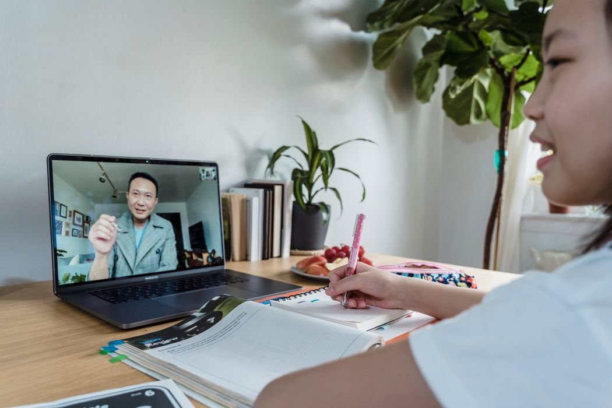

Cuando hay conexión
Imagina que una estudiante revisa la consigna de inglés desde el teléfono. Escucha un diálogo, graba su respuesta y recibe una observación del docente. El aula conserva la tarea y la retroalimentación en el mismo lugar.
Sociedad
En un aula virtual, el horario de clase deja de ser la única oportunidad para consultar una explicación. El diseño del material determina quién puede aprovechar esa flexibilidad.
Imagina que una estudiante revisa la consigna de inglés desde el teléfono. Escucha un diálogo, graba su respuesta y recibe una observación del docente. El aula conserva la tarea y la retroalimentación en el mismo lugar.
Si toda la actividad depende de una videollamada, una caída de la red puede dejar a la estudiante fuera de la clase. Con una transcripción descargable puede preparar su respuesta y entregarla al recuperar la señal.
